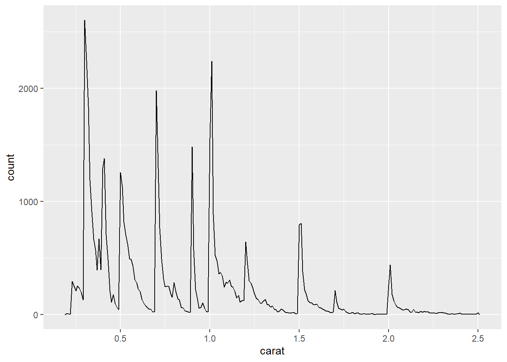

library(tidyverse)Chapter 29 (Quarto)
29.2.1 Exercises
- Create a new Quarto document using File > New File > Quarto Document. Read the instructions. Practice running the chunks individually. Then render the document by clicking the appropriate button and then by using the appropriate keyboard short cut. Verify that you can modify the code, re-run it, and see modified output.
- The document has been created. Some of the chunks are as follows:
diamonds |>
filter(carat > 2) |>
ggplot(mapping = aes(x=carat, y=price,
color = color)) +
geom_point(alpha = 0.5) +
#scale_y_continuous(trans = "log") +
geom_smooth(se=FALSE) +
scale_color_brewer(palette = 2)- Verifying that the code can be modified and re-run:–
diamonds |>
filter(carat > 2) |>
filter (carat < 3) |>
filter (price > 10000) |>
ggplot(mapping = aes(x=carat, y=price,
color = color)) +
geom_point(alpha = 0.3) +
scale_y_continuous(trans = "log") +
geom_smooth(se=FALSE) +
scale_color_brewer(palette = 4) +
theme_minimal() +
labs(title = "Plot of relation between Carat and Price",
subtitle = "For different colours of diamonds",
y = "Price (in $)", x = "Carat") +
theme(legend.position = "bottom")- Create one new Quarto document for each of the three built-in formats: HTML, PDF and Word. Render each of the three documents. How do the outputs differ? How do the inputs differ? (You may need to install LaTeX in order to build the PDF output — RStudio will prompt you if this is necessary.)
The outputs are different in the following ways:--
The output text and code are same, but rendering to PDF takes more time than Word. HTML rendering seems to be the fastest.
PDF and MS Word cannot incorporate interactive graphics, while HTML offers interactivity.
The size of the PDF document is the largest, followed by MS Word document, while the HTML uses the least disk space.
29.3.1 Exercises
- Re-create the document in Figure 29.5 using the visual editor.
Text Formatting
italic bold underline strikeout small caps code superscript2 and subscript2
Headings
1st Level Header
2nd Level Header
3rd Level Header
Lists
Bulleted list item 1
Item 2
Item 2a
Item 2b
Numbered list item 1
Item 2. The numbers are incremented automatically in the output.
Links and Images

Tables
| First Header | Second Header |
|---|---|
| Content Cell 1.1 | Content Cell 2.1 |
| Content Cell 1.2 | Content Cell 2.2 |
| Content Cell 1.3 | Content Cell 2.3 |
Using the visual editor, insert a code chunk using the Insert menu and then the insert anything tool.
Here, I am inserting a code chunk using simple the “/” key, and then selecting R-code option:--
print("Hello World") ## [1] "Hello World"Using the visual editor, figure out how to:
Add a footnote.
You can add a foot note by selecting the menu Insert –> Footnote; or, by using Ctrl+Shift+7. Here is an example.1
Add a horizontal rule.
You can add a foot note by selecting the menu Insert –> Horizontal Rule. Here is an example:--
Add a block quote.
You can add a foot note by selecting the menu Format –> Block quote. Here is how we add a block quote:-
A block quote is a long quote formatted as a separate “block” of text. Instead of using quotation marks, you place the quote on a new line, and indent the entire quote to mark it apart from your own words2
In the visual editor, go to Insert > Citation and insert a citation to the paper titled Welcome to the Tidyverse using its DOI (digital object identifier), which is 10.21105/joss.01686. Render the document and observe how the reference shows up in the document. What change do you observe in the YAML of your document?
Let us first add some text from the paper, so that we can use a citation:---
At a high level, the tidyverse is a language for solving data science challenges with R code. Its primary goal is to facilitate a conversation between a human and a computer about data. Less abstractly, the tidyverse is a collection of R packages that share a high-level design philosophy and low-level grammar and data structures, so that learning one package makes it easier to learn the next. (Wickham et al. 2019)
Once we render the document, the citation shows up in the very end of the HTML webpage rendered. It is displayed just above the footnotes. The YAML header of the document, when viewed in the “Source” displays an additional line bibliography: references.bib.
29.4.1 Exercises
Practice what you’ve learned by creating a brief CV. The title should be your name, and you should include headings for (at least) education or employment. Each of the sections should include a bulleted list of jobs/degrees. Highlight the year in bold.
Aditya Dahiya
Education
2005 - 2010: Bachelor of Medicine and Bachelor of Surgery (M.B.B.S.), All India Institute of Medical Sciences, New Delhi
2011-2013: Master of Arts (Public Policy), Indira Gandhi National Open University
2021-22: Master of Public Health, Harvard University, U.S.A.
Employment
2010-2011: Junior Resident Doctor, Neuro-Radiology, A.I.I.M.S., New Delhi
2011-to date: Indian Administrative Services, Government of India
Using the source editor and the Markdown quick reference, figure out how to:
Add a footnote.
To begin with we add a footnote here.3 Then, we inspect the
Sourcetab and find that the method to create a footnote in source editor is to use[^x], wherexrepresents the footnote number. Further, I could not find thefootnoteoption in Markdown Quick Reference though Help menu in the RStudio. But, I searched online and found from here that “to create a footnote in R Markdown, you use the carrot ^ followed immediately by square brackets []. Put the text inside of the [] and it’ll print that at the bottom of the page. Code for a footnote will look like this: ^[This sentence will be printed as a footnote.] . So, I try it here again. 4Add a horizontal rule.
The easiest way to add a horizontal rule in the source editor is “---”, i.e. three hyphens. Or, in the Visual editor, we can choose Insert -> Horizontal Rule.
Add a block quote.
A block quote can be added in the source editor by using a tab, followed by
>key, followed by the text. Further, the book, R Markdown: The Definitive Guide, tells us that “paragraphs that start with>are converted to block quotes.”
Copy and paste the contents of
diamond-sizes.qmdfrom https://github.com/hadley/r4ds/tree/main/quarto in to a local R Quarto document. Check that you can run it, then add text after the frequency polygon that describes its most striking features.
We have data about 53940 diamonds. Only 126 are larger than 2.5 carats. The distribution of the remainder is shown below:

Here’s the paragraph: The frequency polygon tells us that the carat distribution peaks at increments of 0.1, reflecting the fact the measurements of carat is done in increments of 0.1. Further, there are fewer diamonds of higher carat size.
- Create a document in a Google doc or MS Word (or locate a document you have created previously) with some content in it such as headings, hyperlinks, formatted text, etc. Copy the contents of this document and paste it into a Quarto document in the visual editor. Then, switch over to the source editor and inspect the source code.
This is sample MS Word Document. I will copy this document into Visual Editor of Quarto, and then see the code entered in the Source Editor.
First, here’s a list of 4 largest continents:
- Asia
- Africa
- North America
- South America
- Europe
- Oceania
- Antarctica
Second, here’s a list of largest oceans
- Pacific Ocean
- Atlantic Ocean
- Indian Ocean
- Arctic Ocean
- Southern Ocean
The text can be bold, iltalic, or, it can be underlined.
I observe that The Source Editor automatically inserts the R Markdown code needed to produce the visual output of MS Word. The Visual Editor displays the text, just like MS Word. Of course, there are some bugs, especially in bulletined lists and numbered lists with indents. I am unable to create copy the format of sub-lists within bullet points into the Visual Editor. So, I manually went to the Source Editor, and inserted two tabs before each sub-list point. But, for retaining the formatting of bold, italics or underline, the Visual Editor of Quarto is pretty awesome!
1+3 / 4
## [1] 1.7529.5.5 Exercises
- Add a section that explores how diamond sizes vary by cut, color, and clarity. Assume you’re writing a report for someone who doesn’t know R, and instead of setting
echo: falseon each chunk, set a global option.
Let’s explore the diamonds data-set. There are 53,940 diamonds in the data-set. We create histograms for color, cut and clarity. These three help us explore the distribution of diamonds among different types of color, cut and clarity. To not display the code, I use #|echo: false at the start of the chunk. Alternatively, I could use the following code in the YAML header:
knitr:
opts_chunk:
collapse: true## [1] 53940
Download
diamond-sizes.qmdfrom https://github.com/hadley/r4ds/tree/main/quarto. Add a section that describes the largest 20 diamonds, including a table that displays their most important attributes.Here’s the added section.
Examining the 20 largest diamonds, by
caratsince we know from American Gem Society’s website that “Carat is the unit of measurement for the physical weight of diamonds. One carat equals 0.200 grams or 1/5 gram and is subdivided into 100 points.”top20 = diamonds |> arrange(desc(carat)) |> top_n(20) # Examining the cut, color and clarity of the top 20 diamonds, in comparison to all diamonds g4 = ggplot(data = top20, mapping = aes(y = cut)) + geom_bar(stat = "count") + theme_classic() + labs(x = NULL, y = "Cut") g5 = ggplot(data = top20, mapping = aes(y = color, fill = color, color = color)) + geom_bar(stat = "count") + theme_classic() + labs(x = NULL, y = "Color") + theme(legend.position = "null") g6 = ggplot(data = top20, mapping = aes(y = clarity)) + geom_bar(stat = "count") + theme_classic() + labs(x = "No. of Largest Diamonds", y = "Clarity") + theme(legend.position = "null") library(patchwork) p1 = g1 / g2 / g3 / g4 / g5 / g6 + plot_layout(ncol = 2, nrow = 3, byrow = FALSE) print(p1)
Hence, we can see that the largest diamonds are, on average, of poorer cut, i.e.
Fair. They are more likely to be ofl1clarityandJandIcolours.Modify
diamonds-sizes.qmdto uselabel_comma()to produce nicely formatted output. Also include the percentage of diamonds that are larger than 2.5 carats.
smaller <- diamonds |>
filter(carat <= 2.5)
comma = function(x) {format(x, digits = 2, big.mark = ",")}Thus, we conclude that we have data about 53,940 diamonds. Only 126 are larger than 2.5 carats. The percentage of diamonds that are larger than 2.5 carats is 0.23 %. The inline code that I used to get these numbers is:–
comma(nrow(diamonds))
comma(nrow(diamonds)-nrow(smaller))
comma(100*(nrow(diamonds)-nrow(smaller))/nrow(diamonds))References
Wickham, Hadley, Mara Averick, Jennifer Bryan, Winston Chang, Lucy McGowan, Romain François, Garrett Grolemund, et al. 2019. “Welcome to the Tidyverse.” Journal of Open Source Software 4 (43): 1686. https://doi.org/10.21105/joss.01686.
Footnotes
This is a sample footnote to answer the Question 3(a) of the 29.3.1 Exercises within the Chapter 29 “Quarto” of the Book “R for Data Science, 2nd Edition” by Wickham, Cetinkaya-Rundel & Grolemund.↩︎
Source: Scribbr.com. What is a block quote?↩︎
I use Ctrl + Shift + 7 to create a footnote here.↩︎
This is a test footnote I wrote in the Source Editor↩︎